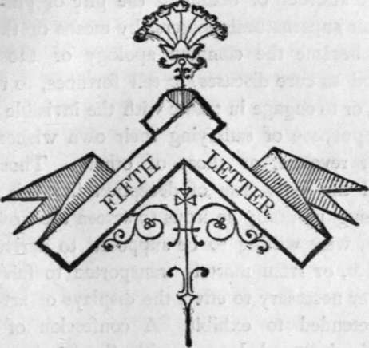

Fifth Letter
Description
This section is from the book "Letters On Demonology And Witchcraft", by Walter Scott. Also available from Amazon: Letters On Demonology & Witchcraft.
Fifth Letter
Those who dealt in fortune-telling, mystical cures by charms, and the like, often claimed an intercourse with Fairy Land—Hud-hart or Hudikin—Pitcairn's Scottish Criminal Trials—Story of Bessie Dunlop and her adviser—Her Practice of Medicine —and of Discovery of Theft—Account of her Familiar, Thome Reid—Trial of Alison Pearson—Account of her Familiar, William Sympson—Trial of the Lady Fowlis, and of Hector Munro her Stepson—Extraordinary Species of Charm used by the latter—Confession of John Stewart, a Juggler, of his Intercourse with the Fairies—Trial and Confession of Isabel Gowdie—Use of Elf-arrow-heads—Parish of Aberfoyle—Mr. Kirke, the Minister of AberfoyWs Work on Fairy Superstitions—He is himself taken to Fairy Land—Dr. Grahames Interesting Work, and his Information on Fairy Superstitions— Story of a Female in East Lothian carried off by the Fairies —Another instance from Pennant.
TO return to Thomas the Rhymer, with an account of whose legend I concluded last letter, it would seem that the example which it afforded of obtaining the gift of prescience, and other supernatural powers, by means of the fairy people, became the common apology of those who attempted to cure diseases, to tell fortunes, to revenge injuries, or to engage in traffic with the invisible world, for the purpose of satisfying their own wishes, curiosity, or revenge, or those of others. Those who practised the petty arts of deception in such mystic cases being naturally desirous to screen their own impostures, were willing to be supposed to derive from the fairies, or from mortals transported to fairy land, the power necessary to effect the displays of art which they pretended to exhibit. A confession of direct communication and league with Satan, though the accused were too frequently compelled by torture to admit and avow such horrors, might, the poor wretches hoped, be avoided by the avowal of a less disgusting intercourse with sublunary spirits, a race which might be described by negatives, being neither angels, devils, nor the souls of deceased men; nor would it, they might flatter themselves, be considered as any criminal alliance that they held communion with a race not properly hostile to man, and willing, on certain conditions, to be useful and friendly to him. Such an intercourse was certainly far short of the witch's renouncing her salvation, delivering herself personally to the devil, and at once ensuring condemnation in this world, together with the like doom in the next.
Accordingly the credulous, who, in search of health, knowledge, greatness, or moved by any of the numberless causes for which men seek to look into futurity, were anxious to obtain superhuman assistance, as well as the numbers who had it in view to dupe such willing clients, became both cheated and cheaters, alike anxious to establish the possibility of a harmless process of research into futurity for laudable, or at least innocent, objects, as healing diseases, and the like ; in short, of the existence of white magic, as it was called, in opposition to that black art exclusively and directly derived from intercourse with Satan. Some endeavoured to predict a man's fortune in marriage or his success in life by the aspect of the stars ; others pretended to possess spells by which they could reduce and compel an elementary spirit to enter within a stone, a looking-glass, or some other local place of abode, and confine her there by the power of an especial charm, conjuring her to abide and answer the questions of her master. Of these we shall afterwards say something; but the species of evasion now under our investigation is that of the fanatics or impostors who pretended to draw information from the equivocal spirits called fairies ; and the number of instances before us is so great as induces us to believe that the pretence of communicating with Elfland, and not with the actual demon, was the manner in which the persons accused of witchcraft most frequently endeavoured to excuse themselves, or at least to alleviate the charges brought against them of practising sorcery. But the Scottish law did not acquit those who accomplished even praiseworthy actions, such as remarkable cures by mysterious remedies; and the proprietor of a patent medicine who should in those days have attested his having wrought such miracles as we see sometimes advertised, might perhaps have forfeited his life before he established the reputation of his drop, elixir, or pill.
Sometimes the soothsayers, who pretended to act on this information from sublunary spirits, soared to higher matters than the practice of physic, and interfered in the fate of nations. "When James the First was murdered at Perth, in 1437, a Highland woman prophesied the course and purpose of the conspiracy; and, had she been listened to, it might have been disconcerted. Being asked her source of knowledge, she answered Hudhart had told her, which might either be the same with Hudikin, a Dutch spirit somewhat similar to Friar Rush or Robin Goodfellow,* or with the Red-capped demon, so powerful in the case of Lord Soulis, and other wizards to whom the Scots assigned rather more serious influence.
The most special account which I have found of the intercourse between fairyland and a female professing to have some influence in that court, combined with a strong desire to be useful to the distressed of both sexes, occurs in the early part of a work to which I have been exceedingly obliged in the present and other publications.* The details of the evidence, which consist chiefly of the unfortunate woman's own confession, are more full than usual, and comprehend some curious particulars. To spare technical repetitions, I must endeavour to select the principal facts in evidence in detail, so far as they bear upon the present subject.
* " Hudkin is a very familiar devil, who will do nobody hurt except he receive injury; but he cannot abide that, nor yet be mocked. He talketh with men friendly, sometimes visibly, sometimes invisibly. There go as many tales upon this Hudkin in some parts of Germany • as there did in England on Robin Goodfellow."—Discourse concerning Devils annexed to The Discovery of Witchcraft, by Reginald Scot, book i. chap. xxi
Continue to: